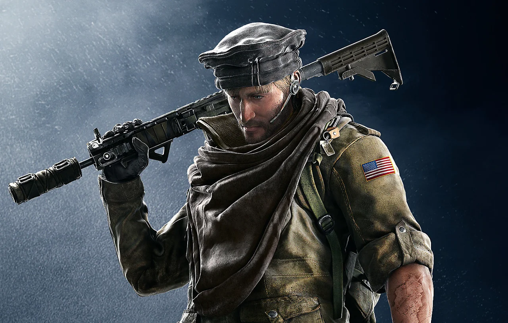

Bostonian Erik Thorn came from a multilingual home and ranked in the top 2% in intelligence. While his parents were loving, they were extremely protective and did not allow him to explore his own childhood neighborhood. This eventually led him to enlist in the U.S. Army after high school where he rose in rank over a short period of time. He learned Dari, and became an Intelligence Officer, serving in Kabul as foreign reporters, adventurers, and criminals flocked to the city. Thorn was well known in the underground club circuit and even among locals as a proficient Buzkashi player.
- Real name: Erik Thorn
- Organization: Delta Force
- Position: Attacker
- Date of birth: April 20
- Age: 36

"Blowtorch capable of burning holes reinforced walls at an almost inaudible level." — Exothermic-S "Suri" Torch Description